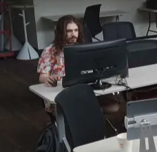

hi everyone!! Last weekend (July 26th and 27th) I took part in an in person game jam for the first time!
 image of me taken without my knowledgeSo, technically the jam was all July long, with only the last weekend done in person. I didn't really want to dedicate an entire month to a game, so I challenged myself to create all or at least most of the game during the in person weekend. I ended up making drag drone, a game about bein a little drone who has to carry heavy stuff around. It's a bit of a mix of puzzle and precision platformer. I came up with it the night before, slightly insprired by the flying mechanics from timmy christmas. Most of the early development was playing around with the physics til it felt good. Then I polished the visuals, and then made a handful of levels to playthrough.
Although it feels a little white and nerdy to say it, it was a lot of fun! It mostly involved just sittin around and working on my game, since I was working on my project alone, but still I enjoyed the environment. There were also like five thousand donuts for my fat ass and that was pretty cool. It's also so much easier to work without distractions, who knew.
At the end of the weekend, we went around and tried out all the games. You can also check them out here.
I spent the last couple days making a few more levels for drag drone and making proper level transitions and stuff before the official end of the jam. I think I'll still polish it up a little more before posting it on newgrounds, but I gotta get back to working on my website first!
I do wish there a was a little more of a game dev scene in my area, but I'm grateful there's at least a little bit.
I think after this I'm gonna take a bit of a longer, proper game dev break. This weekend was an exception to a pretty long period of burnout. I wanna practice more art and writing and comics seem like the perfect way to do that. It'll also be cool as fuck.